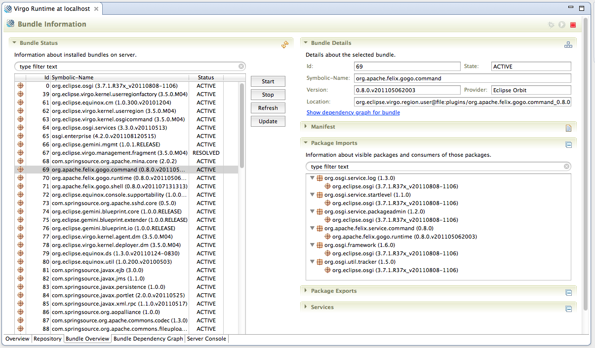
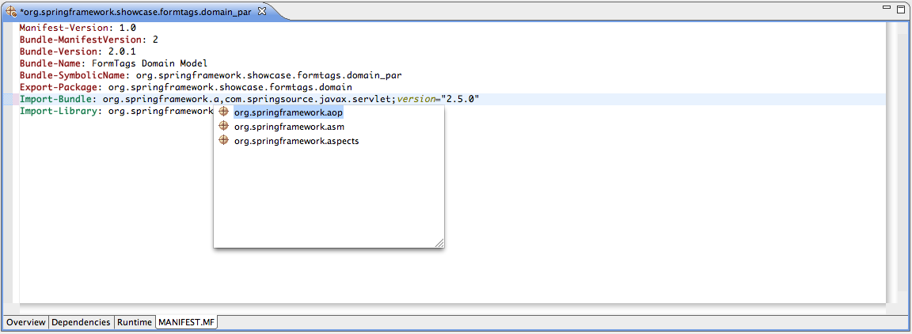

Table of Contents
- 1. Tooling
- 2. What's New
- 3. Running a Virgo Runtime Environment
- 4. Server Perspective and Views
- 5. Server Editor
- 6. Developing OSGi Bundles
- 7. Developing OSGi Bundles using Plug-in Development Environment (PDE)
- 8. Developing Plans
- 9. Developing PARs
- 10. Deploying Applications
- 11. Installation and Release Notes
Virgo Tools support the Virgo runtime with tools for managing servers, server runtimes, and bundles. The IDE tools build on top of the Eclipse Web Tools Project (WTP) and collaborate with other Eclipse technologies such as the Eclipse Libra project.
Among other things, the Virgo Tools support the creation of new OSGi bundle and PAR projects within Eclipse, and the conversion of existing projects into OSGi bundle projects. Projects can then be deployed and debugged on a running Virgo Runtime from within Eclipse.
Besides its OSGi bundle projects, starting from version 1.5 Virgo Tools support usage of Plug-in Development Environment (Eclipse PDE) for developing projects that can be deployed and debugged on a running Virgo Runtime from within Eclipse.
Starting from version 1.5 it is possible to develop for the Virgo Runtime using the Eclipse Plug-in Development Environment (PDE). See the Tooling Guide for more information on this new feature.
The Server Runtime Wizard can now optionally assist the user in setting up a PDE Target Platform definition whose content reflects the Virgo Runtime repository configuration.
A new project wizard allows creating PDE Plug-in projects that are also Virgo Runtime projects and can be deployed on a Virgo Server
A new project wizard allows creating Plan projects in the workspace. Plan projects permit to deploy a plan to the Virgo Runtime within Eclipse and can be seen as a possibly more convenient alternative to adding individual bundles to the Virgo Runtime and defining their activation order via the Server Editor.
We've added more views and other tools for working with Virgo Runtime instances. See the expanded Tooling Guide for more information on these new features.
In addition to the new Repository View, we've added:
The properties view allows you to directly access all of those Virgo Runtime properties that are buried away in one file or another.
To support those new features, Virgo Tooling now maintains a project for each configured Runtime. Because these are Eclipse projects you can use all of the powerful Eclipse IDE tools to explore artifacts installed on the servers. (You shouldn't try to modify these projects directly though.) For example, you can use the JDT Type Hierarchy and Open Type tools.
We've made extensive changes throughout Virgo, focusing on quality and migration, but with a few new features as well.
Virgo now supports almost all versions and types of Virgo installs, including older versions of Virgo and Tomcat, Jetty and Kernel installations. Best of all, you can now define servers using a single Server Runtime and the tooling will automatically discover the appropriate server configurations. You can even change server installations and versions for server runtimes without having to maintain any server setttings.

We've provided a number of new features aimed at improving the user experience. We've been giving more transparency and leverage into what's actually happening on the server. Right now, interactions with the server involve frequent shifts back and forth between the Eclipse IDE, the native file system and the command line. Our ultimate goal is to have tools powerful and complete enough that you can work with the server without ever having to move out of Eclipse.
You can now get your own perspective on Virgo. We've organized it to support runtime exploration but it should be usable for general development as well. Please give us feedback on the overall setup; we'll incorporate the feedback in future releases.

When we talked to current users of the Spring Source / Virgo tools, one of the things we discovered is that there were a lot of features that they wanted to have us implement that actually already existed, but in many cases were buried somewhere -- in many cases on a page in the server editor. So we're providing some of the information and tools that are provided in the WTP-based Server Editor as stand-alone views and enriching it. The idea is provide better insight into what's happening on the server side. Some of these features involve significant changes to how server resources are treated and we'd appreciate your feedback on how well they work for your usage scenarios. We'll use these changes as a basis for further enhancements.
As a first take at helping users find what they're looking for, we provided an outline view that gives quick access to server artifacts.

A new view supports transparent access to runtime artifacts. Currently, you can view bundle jars and libraries, but we'd like to support plans, pars, properties and other artifact types as well. But the real news is what we've built behind this -- Virgo runtimes are now exposed as Eclipse projects, giving you full access to the contents of jars, including classes. You can even use JDT tools like the Type view on Server side jar contents.
All of the new views are supported through the Eclipse Common Navigator Framework (CNF), which means that the views are highly configurable, and we've provided buttons to allow you to easily toggle on and off artifact types and present the artifacts in a tree or list view so that you can see all installed jars in one place.
And because the views are all supported through CNF, you can easily customize them. For example, currently you can access all of the bundle information from the server view -- but we'll probably disable that by default in the release. In any case, you can set it up anyway you want by adding or removing the content provider. Again please let us know if you think of a way that we can improve the user experience for you.

The complete virgo documentation set -- including the Tooling, Programmer and User's Guide as well as the Wiki pages -- is now included as Eclipse Help.

After installing the Tools from the update site outlined in the previous section, you will be able to configure an instance of the Virgo Runtime inside Eclipse.
To do so bring up the WTP Servers view (i.e., → → → → ). You can now right-click in the view and select " → ". This will bring up a "New Server" dialog. Select Virgo Runtime in the "@runtime.category@" category and click " ".
Within the "New Server Wizard" point to the installation directory of the Virgo Runtime and finish the wizard. (The tools will automatically detect the type of server install, so you can point to a Virgo Server for Apache Tomcat, Virgo Jetty Server, Virgo Kernel or any other supported Virgo Runtime.)
After finishing the wizard you should see a Virgo Runtime for the relevant server type in the Servers view.
To start, stop, and debug the created Virgo Runtime instance use the toolbar or the context menu actions of the Servers view.
The Virgo perspective provides an environment customized to support configuring and running Virgo Runtime Environment instances, including views for working with Virgo Runtimes. To switch to the Virgo Perspective from your current perspective, select → → And select "Virgo".
You can explore the contents of installed servers using the Virgo Server Views. These views are designed to help you get to resources on the server without having to switch to the native file system, and integrate those resources with other Eclipse IDE tools. (You can also use the Virgo views from within other perspectives, of course. Select → → and then open the "Virgo" folder to display them.)
The Virgo Repository view allows you to work directly with the contents of installed bundles and libraries on Virgo Runtime instances.
To view resources, select a repository in the Servers View. You can customize what and how they are displayed using the view toolbar buttons.
You can select multiple respositories as well, allowing you to easily navigate and compare resources on multiple servers. You can double-click on items, open them, and even explore class hierchies and other Eclipse features by right clicking on the repository resources.
Hint: In the example below we have selected the Flat Layout and can see that javax.ejb library is present in one Virgo Runtime, but not the other.
The Virgo Properties view allows you to inspect the properties of Virgo Runtime instances. Rather then digging through files on the server instance to find the parameters you need to adjust, simply select the server(s) you want to find parameters for, and a list of properties files will be displayed in the editor. To open a file in the appropriate Eclipse editor, just double-click on it. Or open a tree node and double-click on a specific property and the property value will be highlighted for editing.
Hint: Not sure where a given property is even located? You can easily see all properties within a given Virgo Runtime across all properties files, sorted by name. Click the "List" button in the view toolbar. You can even see properties across runtime instances by selecting multiple servers in the Server View.
The Virgo Logs view supports easy access to runtime log files. As with the other views, just select the Virgo Runtime instance(s) you are interested in. Then double-click to open the relevant log file.
The Console view is the same view that is used in the Java and other perspectives. It displays the console activity for the last server instance you launched, assuming that you haven't launched another console hosted process in the mean-time. (This view is not connected to the Server View -- if you want to examine consoles for differnt running servers, click the "Down Triangle" icon in the view toolbar and select the appropriate console.)
To support all of the view features, projects are created within your workspace. These are managed automatically and shouldn't be modified, deleted or renamed. But you can explore these artifacts directly from the project and package explorers and with other Eclipse tools.
Hint: For example, you can find out what classes are available on Virgo Servers using the Type and Resource search dialogs. Just select and enter a search pattern.
After successful configuration of an instance of the Virgo Runtime Environment in Eclipse you can use the server editor to configure and explore many different aspects of the Virgo Runtime instance. To open a server editor double-click a Virgo Runtime instance in the Servers view.
The server overview page is the first page of the editor. Please note that opening of the Editor may take a few seconds as the contents of the local repository needs to be indexed before opening.
The overview page contains several sections. Some of them are inherited by the Web Tools Platform while other are contributed specifically by the Virgo Tools.
- The Target Platform section has been introduced in release 1.5 and provides shortcuts for editing or reloading the PDE Target Platform associated to the current Virgo Runtime Environment.
- The Redeploy Behavior section allows the user to specify files that should be copied into the server without redeploying the bundle. This is typically used to speed up publishing operations for static files.
- The Publishing section allows the user to select when changed resources should be published to the running server.
- The Timeouts section allows the user to configure the server startup and shutdown timeout.
- The Deployer Control section allows the user to configure the parameters of the JMX communication between the Virgo Tools and the Virgo Runtime Environment.
- The Artefact Deployment Order section allows the user to configure the activation order of the artefacts deployed into the Virgo Runtime Environment. Multi-selection is supported.
- The Server Startup Configuration section allows the user to configure statup parameters of the Virgo Runtime Environment. The -clean options if checked forces the cleaning of the Virgo Runtime Environment temporary folders at every startup.
See the Web Tools Platform Guide for more information on the other configuration sections.
The Repository Browser allows you to see what bundles and libraries are available on the @product.instance and to very easily install bundles and libraries from the remote Enterprise Bundle Repository. To view resources installed on the Server select the "Repository" tab in the server editor.
The left section of the Repository Browser allows the user to run searches against the SpringSource Enterprise Bundle Repository and displays matching results. The search can take parts of bundle symbolic names, class or package names and allows wildcards such as ‘?’ and ‘*’. By selecting the checkbox left to a matching bundle and/or library and clicking the "Download" button it is very easy to install new bundles in the Virgo Runtime. For your convenience JARs containing the bundle source code can be automatically downloaded as well.
Clicking the "Download" button will trigger an Eclipse background job that will download the selected repository artifacts and -- if desired -- the source JARs one after another.
The section on the right displays the bundles and libraries that exist on the server. Bundles with available sources are visually marked. You can very easily download missing source JARs by using the "Install Sources" button. Note that these bundles may or may not be actually "installed" on the Virgo Runtime in the sense that they are known to it -- they may simply exist in the respective directories.
To view and control resources actually installed on the Server select the "Bundle Overview" tab in the server editor.

Here you can start, stop, refresh and update bundles, as well as view detailed information about the bundle. Note that information about running bundles cannot be displayed unless the server is actually running. You can refresh the list of bundles by selecting the refresh button in the upper-right-hand corner of the "Bundle Status" section.
Click the "Show dependency graph for bundle" link to bring up the Bundle Dependency Graph page focused on the selected bundle. See the next section.
The "Bundle Dependency Graph" tab takes you to a page where you can visualize the complex relationships between bundles.
You can view package or services relationships by selecting the relevant radio button in the "Configuration" section. The "Incoming" and "Outgoing" controls define how many levels of dependencies are shown. For example, if you select a value of 2 for Incoming, the graph will who items that the selected bundle(s) are dependent on as well as the bundles that those bundles are then dependent on.
Use the search text area in the editor header to select the source bundles for the graph. Wild cards are supported. Click the refresh button to update the bundle graph.
The "Server Console" tab takes you to an interactive console for exploring and managing the state of a running server. (This console is different from the "Console View", which displays the log output of running server instances.) Enter text in the "Command" text area and click the "Execute" button or press RETURN to execute the command.
For a list of available commands and how to use them, see the Virgo Shell Command Reference sub-section of the Equinox Console section in the Virgo User Guide
The Tools provide functionality that makes developing OSGi bundles, especially the editing of MANIFEST.MF files, easier.
While working with OSGi bundles, one of the most interesting and challenging aspects is defining the package, bundle,
and library imports in the manifest and then keeping this in sync with your compile classpath either in Ant and Maven
or Eclipse. In most cases you would typically be required to manually set up the Eclipse classpath. Ultimately, the
Eclipse compile classpath is still different from the bundle runtime classpath, as normally an entire JAR file is
being made available on the Eclipse classpath but not necessarily at runtime due to the explicit visibility rules
defined in
Import-Package
headers.
The Tools address this problem by providing an Eclipse classpath container that uses an
Virgo Runtime Environment-specific dependency resolution mechanism. This classpath container makes resolved
dependencies available on the project’s classpath but allows only access to those package that are imported
explicitly (e.g., via
Import-Package
) or implicitly by using
Import-Library
or
Import-Bundle
.
To use the automatic dependency resolution, an OSGi bundle or PAR project needs to be targeted to a configured Virgo Runtime Environment instance. This can be done from the project’s preferences by selecting the runtime on the "Targeted Runtimes" preference page.
![[Note]](images/note.gif) | Note |
|---|---|
| In most scenarios it is sufficient to target the PAR project to a runtime. The nested bundles will then automatically inherit this setting. |
After targeting the project or PAR you will see a "Bundle Dependencies" classpath container in your Java project. It is now safe to remove any manually configured classpath entries.
The classpath container will automatically attach Java source code to the classpath entries by looking for source JARs next to the binary JARs in the Virgo Runtime Environment’s repository. You can also manually override the source code attachment by using the properties dialog on a single JAR entry. This manual attachment will always override the convention-based attachment.
The Tools provide a Bundle Manifest Editor that assists the developer to create and edit MANIFEST.MF files. The
editor understands the Virgo Runtime Environment specific headers like
Import-Library
and
Import-Bundle
and provides content assist features while editing source code. Furthermore a Eclipse Form-based UI is also
available.
To open the Bundle Manifest Editor right click a MANIFEST.MF file and select "Bundle Manifest Editor" from the "Open With" menu.
| Note |
|---|---|
| Please note that the Virgo Runtime Environment specific manifest headers appear in green color to distinguish them from those headers defined in the OSGi specification. This also makes navigating much easier. |

The content assist proposals in the source tab as well as in the UI-based tabs are resolved from the bundle and library repository of an installed and configured Virgo Runtime Environment. Therefore it is important to target the project or PAR to a specific Virgo Runtime instance to indicate to the tooling which bundle repository to use.
| Note |
|---|---|
| If a OSGi bundle project is not targeted to a Virgo Runtime instance, either directory or indirectly via a PAR project’s targetting, the manifest editor will not be able to provide content assist for importing packages, bundles, and libraries. |
The Dependencies tab of the Bundle Manifest Editor enables the user to easily download and install bundles and libraries from the SpringSource Enterprise Bundle Repository by using the "Download..." buttons next to the "Import Bundle" and "Import Library" sections.
Starting from release 1.5.0 the Tools support developing OSGi Bundles using the widely popular Eclipse Plug-in Development Environment (PDE).
While working with OSGi bundles, one of the most important aspects is defining the required dependencies in the MANIFEST.MF file. When used in conjunction with the PDE, the Virgo Tools address this problem by leveraging on the PDE tooling and in particular on the PDE Target Platform Definition. A Target Platform Definition defines the bundles which your workspace will be built against.
At runtime however, a PDE Target Platform won't be available and
dependency resolution will always occur against the bundle
repositories configured for the Virgo Runtime Environment. The Tools
try to bridge runtime and development by providing a Server
wizard that creates a new PDE Target Platform Definition that
matches the Server repository configuration,
as defined in
org.eclipse.virgo.repository.properties
.
The Virgo Runtime Environment supports watched, external and remote repositories. Watched and external repositories correspond to file system folders, while a remote repository is a remote Virgo instance that can serve its repository content to other Virgo instances for the purpose of dependency resolution. The PDE Target Platform allows its content to be specified only as file system folders or P2 Update sites. As such, when the Tools create a PDE Target Platform Definition from the runtime repository configuration only watched and external repositories are considered.
Developers should properly setup a local Virgo Runtime Environment so that its bundle repositories contain their application dependencies. Then they should use the Tools to setup a PDE Target Platform so that their workspace projects are built and resolved against the same bundles that will be available at runtime.
| Note |
|---|---|
Note that when using the Tools together with PDE to develop for
Virgo it's not possible to use the MANIFEST.MF headers
Import-Bundle
(not part of the standard OSGi specification but supported by
Virgo)
and Require-Bundle
(part of the standard OSGi specification but not supported by Virgo).
Developers will have to declare all of their external dependencies
using the
Import-Package
header only.
|
After installing the Virgo Tools in Eclipse it is possible to create a new Server. A Server can be created from the global New dialog, by selecting the Virgo Runtime item within the EclipseRT category. Alternatively, users can right click over the Servers view (easily accessible from the Virgo perspective or via New -> Show View -> Other) and select New to open the same wizard.
In both cases the Server wizard will appear and will ask the user to select a valid Virgo installation from the local file system.
| Note |
|---|---|
| The first time a Server is created in a new workspace the wizard will create both a Server instance and a Server Runtime. The former corresponds to the Server where the bundles in the workspace will be deployed, the latter corresponds to the runtime definition of which the former will be an instance. |
| Note |
|---|---|
| While it's in theory possible to create multiple runtimes and different Server instances associated to them within a single workspace, only one PDE target platform can be active in a workspace at a time. As such when working with the Virgo Tools and PDE it is recommended to use one dedicated Eclipse workspace for one Server runtime and one PDE Target Platform. |
To manage bundle dependencies with PDE make sure to select the check-box in the next page of the wizard:
The wizard will then parse the org.eclipse.virgo.repository.properties file and show to the
user the folders that will be used for setting up the PDE Target Platform definition.
In this page it's possible to include additional folders before pressing Finish.
The folders visible in the picture above are the default content of an unchanged org.eclipse.virgo.repository.properties file plus the server plugins folder
contained in the server home directory. In reality the plugins folder is not a bundle repository and is not listed in the org.eclipse.virgo.repository.properties file.
It contains some core components of the Virgo Runtime Environment and gets included in the Target Platform definition
because at runtime the contained bundles are made available to the deployed applications for dependencies resolution.
Additional folders can be added (or removed if already present in the org.eclipse.virgo.repository.properties file). When the Finish button
is pressed the wizard will create a PDE Target Platform definition and will offer to modify org.eclipse.virgo.repository.properties to reflect any change applied by the user.
The newly created Target Platform will be named after the Server runtime (usually "Virgo Runtime" if not changed by the user in the previous wizard page).
| Note |
|---|---|
| Note that while it's safe to include additional folders, users should not remove the default folders unless they really know what they are doing. |
It is possible to double check the content of the newly created PDE Target Platform via the Target Platform preferences page in the Preferences dialog (Window -> Preferences):
The target platform name must match the Server runtime name ("Virgo Runtime" in this example) for the Virgo Tools to be able to correlate the two.
| Note |
|---|---|
| When a PDE Target platform exists for a Virgo Server instance and is named like the corresponding Virgo Runtime, the Server icon is decorated in the Servers view with a tiny plug-in icon in the top-left, as depicted below. |
As visible in the above picture, the Server editor, which is easily accessible by double-clicking over the Virgo Runtime Environment in the Server view, provides an new section titled Target Platform which allows reloading the content of the Target Platform definition associated to the current server (useful for example when new bundles are added to the repository) and allows editing the content of the current Target Platform definition by recalling the same UI of the last page of the server creation wizard.
Now that the Virgo Runtime Environment has been properly setup in the Eclipse workspace, including the corresponding PDE Target Platform definition, it's finally possible to create new projects.
The Virgo Tools require PDE Plug-in projects to be augmented with some additional features to be usable. As such, in order to create a new project it is necessary to use the dedicated wizard named PDE Bundle project located within the Virgo category:

The above wizard is the standard PDE Plug-in project wizard with some choices disabled or defaulted. In addition to the usual pages it includes an extra page where the user can optionally specify a Web context root. If a context root is specified the new project will be a Web Application bundle (WAB). If the context root is not specified the new project will be a regular OSGi bundle.
| Note |
|---|---|
| The icon of Plug-in projects created for Virgo using the above wizard will be decorated with a tiny EclipseRT globe in the top left. |
| Note |
|---|---|
| Once a PDE Bundle project has been created as explained above, the developer can use the standard PDE Plug-in Editor and related tooling to work with the newly created project. Please refer to the official PDE documentation for further details. |
The Virgo Server Editor includes a section to select when publishing to the server runtime should take place. The section offers three options:
| immediate publish on resource change |
| publish after build |
| never publish automatically |
Immediate publish means that a change to a file in a bundle project deployed on the Virgo Runtime Environment will be automatically published, triggering in most cases a re-deploy of the bundle project, as soon as the file is saved. Publish after build means that a change to one or more files will be automatically published, triggering in most cases a re-deploy, when the containing project is built, either because workspace auto-build is enabled or because the user requested a workspace or project build. Never publish automatically means that publishing will take place only on user request, via the "Publish" action on the Servers view.
While automatic publishing reduces the learning curve for beginners, it may also imply longer waits on large workspaces with many bundle projects deployed to a server, because the re-deploy of a project also implies the re-deploy of all dependent projects. On large workspaces it's recommend to turn off auto-publish and to manually publish bundles as needed. In fact, when the server is running in debug mode, if a source file is changed without altering the external "signature" of a class the Java Virtual Machine will be able to push the new byte-code to the server without requiring a re-deploy of the containing bundle and dependencies. In such case the developer can simply save and build and the Java Virtual Machine will perform the hot-code replace. When the source code change affects the "signature" of a class (such as a change in the signature of a method, a change in inheritance, the addition/removal of new properties of methods) the Java Virtual Machine won't be able to perform the hot-code replace and in such case the user can manually invoke the publish action to trigger a re-deploy of the involved bundle.
Before the Virgo Tools provided support for PDE, some developers where using an unofficial Eclipse plug-in called PDE2Virgo. The Virgo Tools provide a migration action for migrating PDE2Virgo projects into PDE bundle projects. The migration action is accessible via Virgo context menu and is labeled Migrate PDE2Virgo project. The action is visible when the selection contains only PDE2Virgo projects and supports multiple selection.
A migration action is also provided for PDE users who want to migrate PDE Plug-in projects to PDE bundle projects to be able to run their projects on a Virgo test environment integrated in Eclipse. The migration action is accessible via Virgo context menu and is labeled Migrate Plug-in project. The action is visible when the selection contains only Plug-in projects and supports multiple selection.

In Virgo, applications consisting of multiple bundles can be declared using one or more Plans.
To create a Plan project, right-click in the Package Explorer and select → . In the dialog that opens select → and press Next :
In the New Plan Project dialog, enter a suitable name for the project, set the location to a suitable directory, and press Next
In the next wizard page, you can optionally specify a Plan name to also have a Plan file created for you by the wizard.
When creating additional Plan files, make sure you place them within the source folder. You can now add Plan files to the Virgo Runtime in Eclipse via the usual add/remove dialog or by means of drag and drop.
Plan projects and plan files can be used as an alternative to adding individual bundles to the test environment integrated in Eclipse. The main benefits of using Plan files are:
Plan files can be more easily shared with coworkers and/or committed to a source code repository
It may be more convenient to re-order the content of a Plan file using the Eclipse text editor than editing artefact ordering in the Server Editor
Plan files can be composed of other plan files
Items in Plan files will be picked either from the workspace or from the configured bundle repositories
Using Plan files in the test environment is more representative of the production deployment
The Virgo Tools create Plan projects as special types of Java projects with an additional Virgo-specific nature. Plan files must be created within the source folder(s) of Plan projects.
When a Plan file refers to another Plan file, the Virgo Tools will look for the referred Plan file in the same project of the top-level Plan and in all the Plan projects that are directly or indirectly reachable via the project's Java Build Path. If more than one Plan with the same name is found in the project's Java Build Path, the Virgo Tooling will pick the first found when following the Java Build Path defined class-path order. Note that the Plan is identified by the value of the name attribute of the plan element inside the Plan XML document and not the by the file name.
In Virgo, applications consisting of multiple bundles can be packaged as a PAR.
To create a PAR, right-click in the Package Explorer and select → . In the dialog that opens select → and press Next .
In the New PAR Project dialog, ensure the Use default location option is unchecked, enter a suitable name for the project, set the location to a suitable directory, and press Next . For example, the Greenpages sample PAR project would look like this:
In the next dialog, some of the PAR properties are pre-populated. Set the Application Name and the Version as appropriate, then ensure that the Target Runtime is set to Virgo Web Server (Runtime) ... and press Next . For example:

In the next dialog, select the bundles so that they are contained in the PAR and press Finish . For example:
The PAR project is then created.
Currently the Tools support direct deployment of WTP Dynamic Web Projects, OSGi bundle projects, PDE Bundle projects, PAR projects and Plan files (contained in Plan projects) to the Virgo Runtime from directly within Eclipse.
To deploy an application to the Virgo Runtime Environment just bring up the context menu on the configured Virgo Runtime runtime in the Servers view and choose "Add or Remove Projects...". In the dialog, select the desired project and add it to the list of "Configured projects".
| Note |
|---|---|
Deploying and undeploying an application from the Virgo Runtime certainly works while the Virgo Runtime Environment is running, but you can also add or remove projects if the Virgo Runtime is not running. |
Once an application is deployed on the Virgo Runtime Environment the tooling support will automatically pick up any change to source files -- for example, Java and XML context files -- and refresh the deployed application on the Virgo Runtime.
The wait time between a change and the actual refresh can be configured in the configuration editor of the runtime. To bring up that editor, double-click on the configured Virgo Runtime Environment instance in the Servers view.
The Virgo Tooling/IDE concept concerns the whole Virgo tooling (that was available inside SpringSource Tool Suite) being put in a separate project. The tooling supports the following:
Bundle projects
Par projects
Plan files/projects
Web Bundles
New from release 1.5.0: PDE Plug-in projects (created via a dedicated Wizard)
Deployment to a Virgo Server in the server view.
If you're not installing into an existing Eclipse, you'll need one.
Eclipse for Java EE developers is recommended.
Select Help>Install New Software..
Enter one of the Virgo update sites below.
Select "Virgo Tools" feature and click install.
<span style="color:#FF0000"><b>Note:</b> Select <i>only</i> Virgo Tooling. This is a composite site, and the other features are <i>not</i> designed to work within the Eclipse IDE.</span>
- Milestone: <code> http://download.eclipse.org/virgo/milestone/tooling</code> (Recommended)
- Snapshot: <code> http://download.eclipse.org/virgo/snapshot/tooling</code> (Bleeding Edge)
Many users will also want to install the M2E release at: <code> http://download.eclipse.org/technology/m2e/releases</code>. (You'll need this to run the greenpages examples.)
Manifest generation does not seem to be working properly. https://bugs.eclipse.org/bugs/show_bug.cgi?id=379233
Other significant bugs still exist. Please see these release train bugs for a current list, and please report any other issues you discover:
368783: Server management UI bug train https://bugs.eclipse.org/bugs/show_bug.cgi?id=368783
368785: Server runtime support bug train https://bugs.eclipse.org/bugs/show_bug.cgi?id=368785
368782: Plugin packaging issues bug train https://bugs.eclipse.org/bugs/show_bug.cgi?id=368782
You can see all open bugs here.
To support the development of OSGi bundles for Eclipse Virgo with Maven a Maven plugin is available. This plugin is able to start/stop a local Eclipse Virgo instance. Moreover it is possible to deploy/undeploy/refresh bundles via Maven.
In order to use the plugin one has to download the source code from Github and build the binary manually. This can be easily done by executing the following Maven command in the root folder of the plugin where the pom.xml file is located. < pre>mvn clean install</pre> Moreover to generate the documentation just execute the following Maven command (or take the one provided in the repository on Github). < pre>mvn clean plugin:xdoc javadoc:javadoc jxr:jxr site < /pre>
The plugin provides a set of Maven goals that allow different actions.
| Goal | Description |
| <code>virgo:start</code> | Starts a Virgo instance by executing the provided startup script. <br> |
| <code>virgo:shutdown</code> | Stops a running Virgo instance. |
| <code>virgo:immediateShutdown</code> | Stops a running Virgo instance immediately. |
| <code>virgo:deploy</code> | Deploys an OSGi bundle to a running Virgo instance. |
| <code>virgo:undeploy</code> | Undeploys an OSGi bundle from a running Virgo instance. |
| <code>virgo:refresh</code> | Refreshs an already installed module on a running Virgo instance. |
| <code>virgo:bundleRefresh</code> | Refreshs an already installed OSGi bundle on a running Virgo instance. |
Once the plugin has been build and installed in the local Maven repository it can be used within a Maven project. Following is a simple example of a pom file that uses the Maven plugin. < pre><project xmlns=" http://maven.apache.org/POM/4.0.0" xmlns:xsi=" http://www.w3.org/2001/XMLSchema-instance" xsi:schemaLocation=" http://maven.apache.org/POM/4.0.0 http://maven.apache.org/xsd/maven-4.0.0.xsd"&gt; <modelVersion>4.0.0</modelVersion> <groupId>org.example.osgi</groupId> <artifactId>test-bundle</artifactId> <version>0.0.1-SNAPSHOT</version> <packaging>bundle</packaging> <name>OSGi Test Bundle</name> <properties> <project.build.sourceEncoding>UTF-8</project.build.sourceEncoding> </properties> <build> <plugins> <plugin> <groupId>org.apache.felix</groupId> <artifactId>maven-bundle-plugin</artifactId> <version>2.3.6</version> <extensions>true</extensions> <configuration> <instructions> <Bundle-SymbolicName>${project.groupId}.${project.artifactId}</Bundle-SymbolicName> <Bundle-Name>${project.name}</Bundle-Name> <Bundle-Version>${project.version}</Bundle-Version> </instructions> </configuration> </plugin> <plugin> <groupId>net.flybyte.virgo</groupId> <artifactId>virgo-maven-plugin</artifactId> <version>1.0.0</version> <configuration> <virgoRoot>C:/Java/virgo-tomcat-server-3.0.2.RELEASE</virgoRoot> </configuration> </plugin> </plugins> </build> & lt;/project> < /pre> More examples can be found in the documentation. Following are some exemplary Maven commands. < pre>mvn virgo:start <-- will start a Virgo instance mvn clean package virgo:deploy <-- will create an artifact and deploy it to Virgo</pre>
See Eclipse Setup under the Committers tab.
How do I turn on (or turn off) automatic Manifest generation? (Bundlor)
Bundlor is not used by default, you must create you own template file and then turn on incremental manifest generation. Right-click your Virgo project, select the Virgo subcategory from the context menu and select Enable (or Disable) Incremental Generation of MANIFEST.MF File. You can also modify this setting from the Overview page of the Bundle Manifest Editor, under the Bundle Actions section.
Sometimes I'd like to automatically update my Manifest without having to turn on the automatic Manifest setting. How can I do this?
Right-click your Virgo project, select the Virgo subcategory from the context menu and select Run Generation of MANIFEST.MF File. This command has a keybinding that you may customize through Eclipse's Keys preferences. You can also perform an automatic update of the Manifest from the Overview page of the Bundle Manifest Editor, under the Bundle Actions section.
Automatic Manifest generation doesn't appear to picking up changes to my source files.
Sometimes Manifest generation may behave differently depending on whether the tools are configured to scan source folders or to scan output folders. To modify this setting right-click your Virgo project, select properties and select the Virgo -> Manifest Generation subcategory. If Manifest generation isn't working correctly for you, uncheck the "Scan output folders instead of source folders to generate MANIFEST.MF" setting and re-run the Manifest generation. If your Manifest is not being properly generated under either setting, please file a bug.
image:virgo-manifest-generation.png
My Virgo project is validating its dependencies against the wrong Virgo runtime! How do I manage server runtimes for my Virgo projects?
If you've deployed your Virgo projects to multiple Virgo runtimes the tools will associate the project with each runtime, but will only validate against one runtime. In order to manage which Virgo runtime your bundle dependencies are validated against, right-click on the project, select Properties and select the Targeted Runtimes category. From this dialog you can give priority to a particular Virgo runtime.
image:virgo-targeted-runtimes.png
How do I create a Web Application Bundle?
To create a web application bundle choose to create a normal bundle project, but on the Bundle Content panel select the additional property entitled "Web Application Bundle". On the Bundle Properties panel enter a suitable context path for the application as the Web-ContextPath.
How do I export a Web Application Bundle (WAB)? Export -> Bundle Project produces an incorrect product.
To export a WAB invoke Export -> Web -> WAR File
Virgo Jetty Server (VJS) does not startup correctly and I see a 503 error when I go to http://localhost:8080/admin
This can happen after starting VJS clean because VJS is looking for a directory at $KERNEL_HOME/work/tmp but no tmp directory exists. A workaround is to start VJS from the command line without the -clean command, which will create the tmp directory. VJS can then be used from the tools. This bug and workaround are documented at https://bugs.eclipse.org/bugs/show_bug.cgi?id=384288
Can I get a deeper look into the state of the server from the Virgo Tools?
Yes! If you double-click a Virgo server runtime in the Servers view, you'll open up the server editor, with several pages of information. The Repository, Bundle Overview, Bundle Dependency Graph, and Server Console pages all give valuable insight into the state of the server. The Virgo perspective also provides several views into the Virgo Repository, Virgo Properties and Virgo Logs. See the Virgo Tooling Guide for more information.
I want to install Virgo Tools. Should I install all of this neat looking stuff under Virgo Add-ons?
We really don't recommend doing so (see Install_Virgo). Select only Virgo Tooling and Eclipse will take care of installing anything the tooling relies on.
Category:Virgo Category:EclipseRT</rev></revisions></page></pages></query></api>